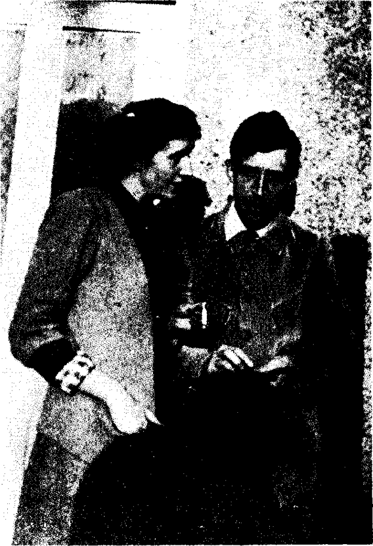

Bölüm 2
Virginia Woolf’un Evliliği
Virginia Stephen otuzuna yaklaştığı halde, hiçbir erkekle aşk ilişkisi kurmamış, kurmak da istememişti. 1909’da, Bloomsbury grubundan, yani adını oturdukları mahalleden alan aydınlar grubundan Lytton Strachey onunla evlenmeyi önerince, adamın eşcinsel olduğunu, bu yüzden de ona el sürmeyeceğini bildiği için, bu öneriyi hemen kabul etti. Çünkü hem onunla cinsel ilişki kurmaya kalkmayacak, hem de aydın olarak değerine inandığı bir erkekle evlenmek niyetindeydi. Önemli bir yazar olan Lytton Strachey, tam istediği türde bir eş olabilirdi. Ne var ki, Virginia bir erkekle cinsel ilişki istemediği kadar, kendi de bir kadınla cinsel ilişki istemeyen adamcağız, nikâh kıyıldıktan sonra ya bu kız boynuma sarılırsa korkusuna kapılıp, ertesi gün önerisini geri aldı. Kardeşine bir mektubunda durumu açıkladı:
“I proposed to Virginia and was accepted. It was an awkward moment as you may imagine, especially as 1 realized the very moment it was happening, that the whole thing was repulsive to me. Her sense was amazing, and luckily it turned out that she’s not in love.”
(Onunla evlenmek istediğimi söyledim Virginia’ya; kabul de edildim. Senin de tahmin edeceğin gibi tatsız bir andı bu. Çünkü bunlar olup biterken, bu işin bana itici geldiğini hemen anlamıştım. Virginia’nın, insanı hayrete düşüren bir sağduyusu var. Bana âşık olmadığı da ortaya çıktı iyi ki... )
Lytton Strachey Virginia Stephen’a aynı gün yazdığı bir mektupta asıl önemli olanın birbirilerinden hoşlanmaları, arkadaş kalmaları olduğunu belirtti. Ömürlerinin sonuna kadar yakın arkadaş kaldıkları da, Lytton Strachey’nin kardeşi James Strachey’nin 1956’da yayınladığı karşılıklı mektuplarından anlaşılır.
Bu sorun tatlıya bağlandıktan sonra, Lytton Strachey, o sırada Seylon’da İngiliz hükümetinin memuru olarak görevli bulunan ve Cambridge’de erkek kardeşleriyle birlikte okuduğu için Virginia Stephen’ı eskiden tanıyan Leonard Woolf’a bir mektup yazdı; Virginia ile asıl onun evlenmesi gerektiğini anlattı. Virginia’ya öteden beri âşık olan Leonard Woolf ise, kız kabul ederse, Lytton’un bir telgraf çekmesinin yeteceğini; memuriyetinden hemen istifa edip, ilk vapurla İngiltere’ye geri döneceğini bildirdi. Nitekim, Leonard Woolf, yedi yıldır yaşadığı Seylon’dan döndükten bir yıl sonra, 1912’de Virginia Stephen ile evlendi.
Virginia’nın yeğeni Quentin Bell’e bakılacak olursa, teyzesi bu adamla evlenmekle yaşamının en doğru kararını vermişti. Gelgelelim, bu gerçek bir evlilik, yani bir erkekle bir kadının cinselliği de içeren karşılıklı aşkı değil; ikisinin de ömürlerinin sonuna değin süren güzel bir dostluktu. Çünkü daha sonraları onunla büyük bir aşk yaşayan kadın yazarlardan Vita Sackville-West’in dediği gibi, Virginia Woolf “dislikes the quality of masculinity” (erkeklik niteliğinden hoşlanmazdı). Kendisini derin bir tutkuyla seven kocasından da hiç gizlemiyordu bunu: “As I told you brutally the other day, I feel no physical attraction in you” (Geçen gün sana kabaca söylediğim gibi, bedensel açıdan seni çekici bulmuyorum.) Leonard onu öperken “I feel no more than a rock” (bir kaya ne kadar hissetmezse, ben de o kadar hissetmiyorum) diyordu. Artık bâkire olmayışı, erkeklere karşı tutumunda hiçbir değişiklik yapmamıştı. “Copulation” (çiftleşme) gibi cinselliği aşağılayan bir sözcüğü özellikle seçerek, “insanların evlilik ve çiftleşme konusunda böylesine telâşlanmalarına” (“people make such a fuss about marriage and copulation!’) çok şaştığını söylüyordu.
Ne var ki, cinsel açıdan yalnız eşine değil, tüm erkeklere karşı buz gibi olan bu kadın, Leonard Woolf’a inanılmaz bir sevgi duyardı. 1919’da güncesine yazdığı gibi, Leonard ile kendisini, “İngiltere’nin en mutlu çifti” (“the happiest couple in England”) sayar; daha da garibi eşini başka kadınlardan müthiş kıskanırdı. İkisini de fena halde üzen başarısız birkaç deneyimden sonra, kardeş kardeş yaşamaya karar vermişlerdi. Kafa açısından tam bir anlaşma vardı aralarında. Beden hazları dışında her şeyi paylaşırlardı. Virginia, bir kitabını bitirir bitirmez, okuyup eleştirmesi için Leonard Woolf’a verirdi. Onu hiçbir zaman yönlendirmeye kalkmayan eşinin, yargıların en doğrusunu vereceğine tam bir güveni vardı. Virginia, hem yazar hem de insan olarak, Leonard Woolf’a yalnız bağlı değil, bağımlıydı bir bakıma. Bunu, kendisini öldürmeden önce Leonard Woolf’a yazdığı mektuptan anladığımız gibi, güncesinden de anlarız. 1924’te, yani Vita Sackville-West ile aşk yaşadığı yıl, eşi mutlu olduğu sürece, kendinde yaşamak ve yaratmak gücü bulduğunu; ama onu üzüntülü ya da asık suratlı görünce, dünyasının yıkıldığını söyler: “The wind is taken out of my sails, and I say what’s it all for?” (Yelkenlerim rüzgâr alamıyor ve bütün bunlar ne işe yarar diyorum ). Aynı yıl, hiçbir konuk gelmediği, evde Leonard ile baş başa kaldığı için çocuklar gibi sevinir. Eve o geç gelince “yaralandığından” (“wounded’) yakınır. Birlikte yaşanılması ne denli güç bir kadın olduğunun da farkındadır. 18 Ağustos 1921 güncesinde zavallı Leonard’ın böyle bir eşi kilitli bir kafeste tutması gerektiğini söyler: “A wife like I am should have a latch to her cage. She bites” (Benim gibi bir eşin kafesinde sürgü bulunmalı. Isırır o!) der.
Leonard Woolf, Bloomsbury Grubu denilen ve entelektüel züppeler sayılarak, kimilerince alaya alınan aydınlar grubunun en değerli üyelerinden biriydi. 1906’da bir araya gelmeye başlayan bu aydınlar, British Museum’un bulunduğu semt olan Bloomsbury mahallesinde otururlar; birbirilerinin evlerinde, genellikle Virginia ile kız kardeşi Vanessa’nın evinde toplanırlardı. Onlara karşı yöneltilen başlıca suçlama, kendilerini fazlasıyla beğenmek, herkese tepeden bakıp aralarına başkalarını almamaktı, Virginia ve Leonard Woolf’tan başka, resim yapan Vanessa ve eşi sanat tarihçisi Clive Bell, Eminent Victorians (Victoria Çağı’nın Önemli Kişileri) ve Queen Victoria yazarı Lytton Strachey, yüzyılımızın en iyi romancılarından E.M. Forster, Ressam Roger Fry, ünlü iktisatçı John Maynard Keynes, bir ara Bertrand Russell ve daha birçok değerli insan vardı bu grupta. Hepsi yüksek orta sınıftandı ve erkekler genellikle Cambridge’de okumuşlardı. Zaten Bloomsbury grubunun temeli, Virginia Woolf’un kardeşi Thoby Stephen, eniştesi Clive Bell, Leonard Woolf, Lytton Strachey gibi bazı Cambridge öğrencilerinin, 1899’da kurdukları Midnight Society (Geceyarısı Derneği’ydi). Bu gençler, Cumartesi geceleri Clive Bell’in üniversitedeki odasında buluşur, şiirler okur; edebiyat, felsefe ve siyasetle ilgili tartışmalar yaparlardı. Böylece başlayan dostlukları, mezun olduktan sonra da Bloomsbury mahallesinde devam etti.

Virginia Woolf ve kocası Leonard Woolf.
Leonard Woolf’un 1967’de BBC televizyonunda yaptığı bir konuşmada belirttiği gibi, aydınlara her zaman kuşkuyla bakan İngilizlerin Bloomburylileri beğenmemelerinin başlıca nedeni, onların “high brow” sayılmalarıydı. İngiliz toplumu yüksek, orta ve aşağı denilen üç sınıfa ayrıldığı gibi, İngilizler de kafa yapılarına göre “high brow” (yüksek alın), “middle brow” (orta alın) ve “low brow” (alçak alın) denilen üç gruba ayrılır. Aldous Huxley’nin “I am a High Brow” (Ben bir Yüksek Alınlıyım) adlı çok hoş bir denemesinde açıkladığı gibi, gerçekten kültürlü kişiler olan high brow’lar, sanatın ve edebiyatın en iyisinden, en seçkininden hoşlanırlar. Middle brow’lar onlardan daha vasat insanlardır; kültür düzeyleri de o kadar yüksek değildir. Low brow’lar ise, düpedüz ilkel beğenileri olan, kültürden tümüyle yoksun insanlardır. High brow’lık, middle brow’lık ve low brow’lık bir insanın toplumsal kökenine, yani yüksek, orta, ya da aşağı sınıftan gelmesine bağlı değildir. Bir Lord fena halde low brow olabileceği, ancak tilki avından, futbol maçından ya da en bayağı kitaplardan hoşlanabileceği gibi (unutmayalım ki, Matthew Amold “barbarlar” adını verir İngiliz aristokratlarına), aşağı sınıftan biri de kendini yetiştirerek, high brow’ların en incesi olabilir. İngilizlerde ise, sınıfsal kökeni ne olursa olsun, high brow’lığı gülünç bulma eğilimi vardır. Oysa Virginia Woolf, kendi high brow’lığını bilir, öyle olmaktan da hiç utanmazdı. İleride göreceğimiz gibi, o sıralarda çok beğenilen, ama Virginia Woolf’un hiç tutmadığı gerçekçi romancı Amold Bennett, “Queen of the High Brows” (Yüksek Alınlıların Kraliçesi) adını takmıştı ona. Leonard Woolf, “intellectual snob” diyerek takılırmış eşine. E.M. Forster de, aynı sıfatı kullanır yakın arkadaşı Virginia Woolf için. Forster’e kalırsa, aydınları hor gören bir ülkede high brow’lığı benimsemek için yiğitlik gerekmekteydi, Virginia Woolf da bu yiğitliği gösterdi.
Bloomsbury grubuna yöneltilen başka bir suçlama da, bu aydınların fildişi kulelerine çekilip, toplumsal sorunlarla yeterince ilgilenmemeleriydi. Oysa Leonard Woolf, İngiliz İşçi Partisi’nin üyesi aktif bir sosyalistti. 1917’de Rus Devrimi’ni sevinçle karşılamıştı. Yedi yıl Seylon’da Büyük Britanya devletinin görevlisi olarak çalıştığı için, bu ülkenin emperyalizmini yakından biliyor, içtenlikle kınıyordu. Gençliğinde Seylon’da The Village in the Jungle (Cangılda Bir Köy) adlı bir roman ve öyküler kaleme almış; ama daha sonraları siyasal makaleler yazmaya yönelmişti. Virginia Woolf, eşiyle birlikte sosyalistlerin bazı toplantılarına gitmekle birlikte, tartışmalara hiç katılmazdı. Katılması için de bir neden yoktu. Çünkü E.M. Forster’e kalırsa, biraz önce de söylediğimiz gibi, yüksek sınıfın aydın çevresinde yetişmenin, bir elite bağlı olmanın bilinci, fazlasıyla kök salmıştı benliğinde. İşçi sınıfının sorunlarına pek ilgi duymadan, uzaktan bakardı. Hattâ 1920’de güncesinde “the fact is the lower classes are detestable” (gerçek şu ki, aşağı sınıflar sahiden nefret edilecek sınıflardır) diye yazmakta bir sakınca görmemişti. Forster’e göre, Virginia Woolf gibi zaten yeterince kişisel sorunları olan bir insanın, toplumsal sorunları da yüklenecek gücü göstermesi beklenemezdi. Ancak 1930’lu yıllarda faşizm tehlikesi ortaya çıkınca, Virginia Woolf’un siyasal açıdan aklı başına geldi.
Leonard Woolf’un yaptığı en olumlu işlerden biri, o sıralarda Hogarth House’da oturdukları için, Hogarth Press adını verdiği bir basımevini kurmasıydı. Birlikte kitap basmalarını, salt karısını oyalamak, bunalımlara düşmesini engellemek amacıyla düşünmüştü. Woolf’lar, bir eskiciden aldıkları elle işleyen bir matbaa makinasını evlerinin bodrum katına yerleştirdiler. Hem Virginia Woolf’un yazdıklarını, hem de o dönemin en avant-garde yazarlarının şiirlerini, öykülerini yayınladılar. Bir hobi olarak başlayan Hogarth Press, zamanla gelişti, başka bir yere taşındı, yeni makinalar alındı, işçiler tutuldu, büyükçe bir yayınevine dönüştü sonunda. Yalnız İngiltere’de değil Avrupa’da da zamanla büyük bir üne kavuşan yazarların kitapları, ilkin Hogarth Press’te yayınlandı. Bunların arasında Katherine Mansfield, T.S.Eliot, James Joyce, Svevo, Ivan Bunin, Rilke, Freud, W.H.Auden, Stephen Spender, Cecil Day-Lewis ve daha başkaları vardı.
Elinin altında bir yayınevi bulunması, Virginia Woolf açısından büyük bir nimetti. Henüz tanınmadığı için, yayınevlerinin kitaplarını basmaya yamaşmamaları olasılığı vardı. Onun kadar alıngan ve aşırı duyarlı bir kadını bu durum fena sarsacaktı. Oysa kendilerine ait bir yayınevi bulunduğundan, Virginia Woolf canının istediğini yazıyor ve yayınlayabiliyordu. Buna çok sevindiği güncesinden de anlaşılır: “Yes, I’m the only woman in England free to write what I like” (Evet, ben, istediğini yazmakta özgür tek kadınım İngiltere’de). Virginia’yı her zaman koruyan eşi, Hogarth Press’i bu açıdan önemsiyordu. 1969’da ölen Leonard Woolf, eşini yitirdikten sonra da onu korumayı sürdürdü. 1960 ile 1969 yılları arasında, kendi özyaşamıyla ilgili bazı kitaplar yazdı: Growing (Büyümek), Beginning Again (Yeniden Başlamak), Down Hill all the Way (Sonuna Kadar Yokuş Aşağı), The Journey not the Arrival Matters (Bir Yere Varmak Değil Yolculuktur Önemli Olan). Bu kitaplardan da anlaşıldığı gibi, Leonard Woolf’un Virginia’nın dehasına tam bir inancı vardı. Uzun ömrü boyunca, dâhi diyebileceği tek kişiydi Virginia. Bu dâhinin ününü yüceltmeyi görev edinmişti kendine. Örneğin, 1965’te F.R.Leavis’in eşi Queenie Leavis, okuyucuların To the Lighthouse’u tutmadıklarını söyleyince, Leonard Woolf, ona hemen bir mektup yazmış ve tam sayıyı vererek, bu romanın o güne dek 253.362 adet sattığını bildirmişti.